In plain terms. AI models often produce answers that break basic rules — an invalid configuration, a self-contradiction — with no built-in way to notice. ThermoLogic gives any answer a score for how much it breaks your rules (zero means it obeys all of them), then “rolls it downhill” to the nearest valid answer, using only the rules and no training data. This report shows the idea works on a small benchmark, that the score doubles as a label-free error detector, and that harder (deeper) reasoning takes proportionally more compute.
Abstract. Neural models trained by maximum likelihood have no internal mechanism forbidding logically inconsistent outputs. We present Project ThermoLogic, a compact PyTorch system that fuses Differentiable Theorem Proving (relaxing discrete rules into fuzzy-logic t-norms) with an Energy-Based Model: a belief state's energy is ~0 when it satisfies every rule and grows exponentially as rules are violated. A small MLP proposes probabilistic truth values; the energy acts as a differentiable prover. On an 11-atom benchmark with a genuine world-level train/test split we report six findings. (1) A plain supervised network matches ThermoLogic on raw accuracy (0.955 vs 0.970) but its outputs are logically inconsistent (mean energy 0.95); the energy layer's value is a label-free consistency guarantee (energy 0.001), not accuracy. (2) Test-time energy repair — gradient descent on the energy — turns an inconsistent output on unseen inputs into a valid one (0.935→0.971 accuracy; energy 0.90→0.0006). (3) In a proof chain, truth propagates one hop at a time: inference cost grows linearly with reasoning depth, and the t-norm sets the propagation speed (~3.4 descent steps/hop for Łukasiewicz vs ~1.0 for Gödel/Product). (4) Asked “why not just project onto the nearest valid state with a solver?”, we answer honestly: an exact projection ties on accuracy (0.969 vs 0.970) — the energy's edge is linear scaling (measured: enumerate-and-project cost grows ~20 orders of magnitude from a 3×3 Latin square to 9×9 Sudoku while repair time grows ~30×) and differentiability (it can be trained through; a projection gives zero gradient). (5) That differentiability is a null for generalization with full labels, but as a semi-supervised loss on a hard target (parity) it lifts accuracy by up to +26 points when labels are scarce — and a head-to-head confirms this is a distinct mechanism from Semantic Loss (Xu et al., 2018), matching or beating it here and far more robust to the loss weight. (6) On an external, non-circular benchmark we did not author — order-4 Latin squares — the method loses on both axes: an exact solver dominates soft energy repair at runtime (100% vs 3.6% valid) and the logic loss gives no training-time lift, because those constraints are permutation-symmetric and carry no signal about the target. The transferable rule: reach for the differentiable logic when you need a gradient, scale past enumeration, or scarce-label target signal — and skip it when a solver fits. The mechanism ships as a small library that scores and repairs any model's structured output against hard rules at a controllable compute budget.
Keywords: neuro-symbolic AI, energy-based models, differentiable logic, t-norms, test-time compute, constraint satisfaction, guardrails, PyTorch.
A maximum-likelihood objective rewards fitting the data distribution; it never assigns infinite cost to a self-contradictory output. Symbolic systems are the opposite — rigorously consistent but non-differentiable. Project ThermoLogic asks a narrow, testable question: can a neural network's continuous, probabilistic beliefs be constrained — and repaired — by discrete logical rules, using only backpropagation? The organizing metaphor is thermodynamic: logical validity corresponds to low energy (a ground state), a contradiction to high energy. Because the energy is differentiable, it can be minimized at training time (as a loss) and at test time (as an inference procedure that repairs a given output). (The thermodynamic framing is an analogy for intuition, not literal physics: there is no entropy, and the “inverse temperature” β is simply a hyperparameter that sharpens the penalty.)
Contributions. (1) A clean, reproducible DTP + EBM implementation with three t-norm families and
residuated implications. (2) A label-free consistency signal + repair operator, and the finding that a plain
supervised net matches on accuracy but not consistency — so the value is reliability, not accuracy (§5.3).
(3) Test-time energy repair framed as inference-time compute, with a measured compute–consistency curve
(§5.2). (4) The truth-propagation wave: reasoning depth ↦ test-time compute is linear, and the t-norm
sets the speed (§5.1). (5) A small product — score()/repair() — and a worked
config-validation use case.
Throughout, an atom is a single atomic proposition — one true/false statement such as
Rain or sso_enabled (the standard logic term for the smallest unit of a rule;
unrelated to physics atoms despite the thermodynamic framing).
Let p_i ∈ [0,1] be the belief that atom i is true. A literal's truth is
p_i (or 1−p_i if negated). A Horn rule L₁∧…∧L_k → C
scores as sat = residuum(⊗ᵢ truth(Lᵢ), truth(C)). Modus ponens is emergent: with the
antecedent believed, residuum(1, p_C) = p_C, so sat→1 requires p_C→1.
Per-rule energy is E_r = exp(β(1−sat_r)) − 1; total E = mean_r E_r. Valid
⇒ E=0; contradictions grow exponentially with inverse temperature β.
| Discrete | Product | Łukasiewicz (default) | Gödel |
|---|---|---|---|
| ¬a | 1−a | 1−a | 1−a |
| a ∧ b | a·b | max(0, a+b−1) | min(a,b) |
| a ⇒ c (residuum) | 1 if a≤c else c/a | min(1, 1−a+c) | 1 if a≤c else c |
Test-time repair (the key operator). Given any belief state p (e.g. a model's output on a
novel input), hold trusted atoms fixed and run gradient descent on E over the rest, in logit space:
p* = argmin E(p). Because minimizing E enforces every rule, this repairs an inconsistent
output to the nearest valid state; the number of steps is a compute budget.
The expanded knowledge base has 11 atoms and 9 rules, yielding 18 distinct logically-consistent worlds
(294 of 2048 full Boolean worlds are consistent). Five atoms are observed causes (Rain, Sprinkler, Cold,
HeaterOn, Windy); six are derived (Cloudy, WetGround, Slippery, Ice, Warm, Chilly) via rules including two-literal
antecedents (Cold∧WetGround→Ice) and a two-hop chain
(Rain→WetGround→Slippery), plus negative constraints (Rain→¬Sprinkler).
We hold out entire worlds: train on 12, test on 6 never seen. Inputs are noisy encodings of the causes
(σ=0.12) with 3 distractor dimensions.
Starting from a state where a cause is true but a chain of derived atoms is false, test-time energy descent
(plain SGD) turns atoms on one hop at a time — atom depth d activates only after d−1.
Activation step is a strictly monotone, near-linear function of depth; the t-norm sets the slope
(Łukasiewicz 3.4 steps/hop; Product/Gödel ~1.0). The clean monotone wave requires momentum-free SGD;
the robust claim is the within-chain wave and linear depth-cost at fixed length. We stress that this linear
scaling is intuitive, not surprising — any iterative fixed-point or message-passing procedure needs steps
proportional to how far information must travel. The contribution is a clean, visual demonstration of that
behaviour in a differentiable-logic energy, not the discovery of a new scaling law.
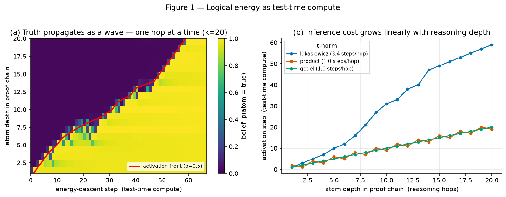
On worlds never seen in training, a single feed-forward pass generalizes only partially and leaves outputs logically inconsistent (high energy). Repair fixes them, and is a compute knob: more steps → lower energy and higher accuracy, plateauing near 50 steps.
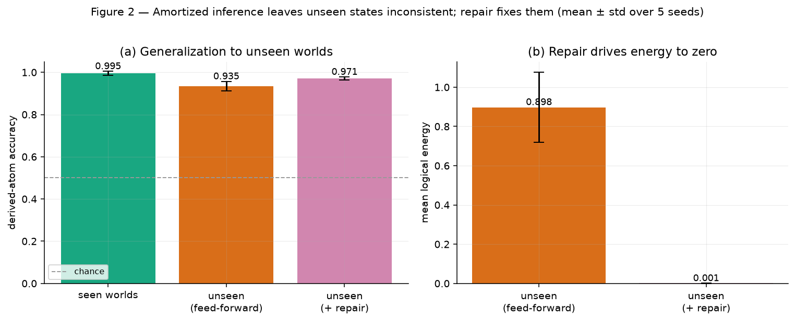
| Split | Derived accuracy | Mean energy |
|---|---|---|
| Seen worlds | 0.995 ± 0.010 | ~0 |
| Unseen (feed-forward) | 0.935 ± 0.022 | 0.898 ± 0.178 |
| Unseen (+ repair) | 0.971 ± 0.007 | 0.001 ± 0.000 |
| Cause recovery (unseen) | 0.981 ± 0.004 | — |
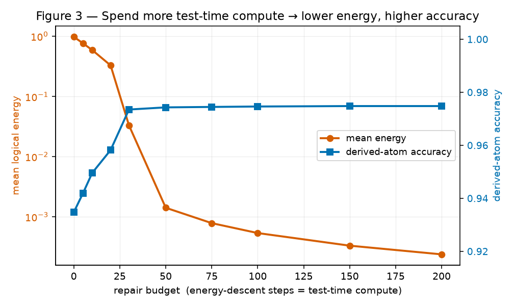
A plain supervised network (BCE on all atoms, no logic) reaches 0.955 accuracy on unseen worlds — comparable to ThermoLogic + repair (0.970). But its outputs are logically inconsistent (energy 0.946), with no signal that anything is wrong. Only the energy provides a label-free consistency guarantee (0.001). This is the honest headline: ThermoLogic is a reliability mechanism, not a way to beat a classifier on accuracy.
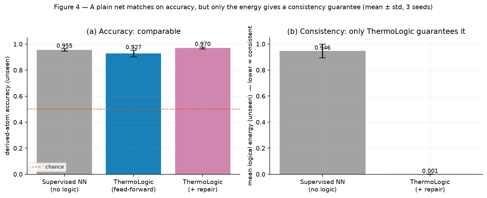
| Method | Derived accuracy | Mean energy (consistency) |
|---|---|---|
| Supervised NN (no logic) | 0.955 ± 0.010 | 0.946 ± 0.053 ✗ inconsistent |
| ThermoLogic (feed-forward) | 0.927 ± 0.026 | 0.90 |
| ThermoLogic (+ repair) | 0.970 ± 0.008 | 0.001 ± 0.000 ✓ |
Repair helps most when causes are recoverable (low–moderate noise); at high noise (σ≥0.3) mis-recovered causes cap accuracy. As more worlds are held out, generalization degrades gracefully. Among t-norms, Łukasiewicz's smoother gradients give the best accuracy and repairability (0.970 vs 0.876 Product, 0.878 Gödel) — the default.
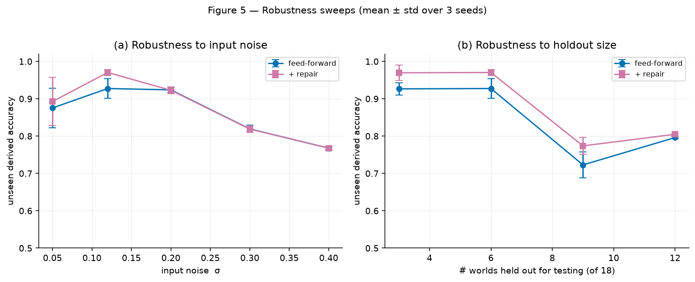
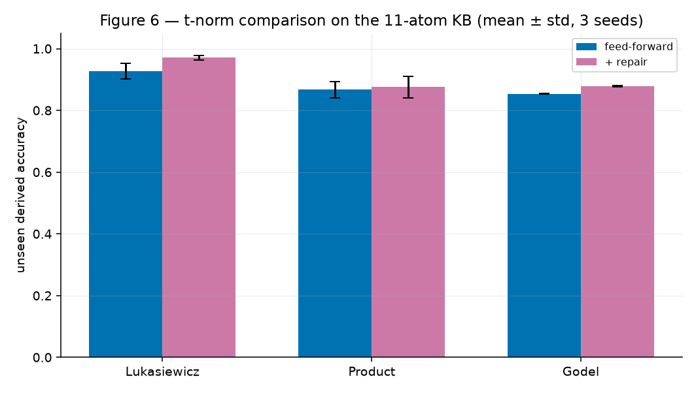
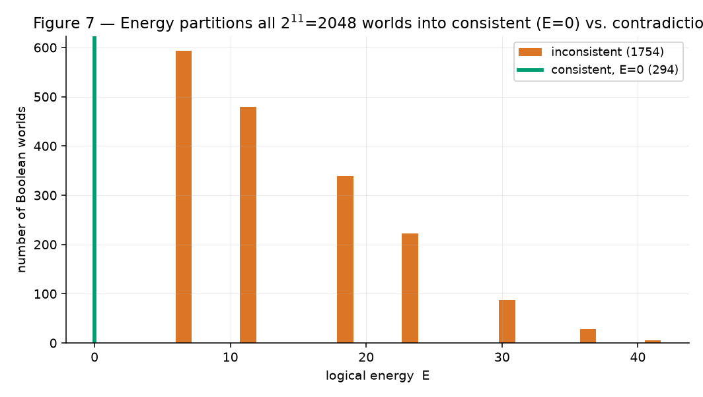
The obvious objection is “why not just project the output onto the nearest valid state with a solver?” We compare against forward-chaining (a Horn-KB oracle), an exact confidence-weighted projection (enumerate valid completions, pick the nearest to the model's soft output), and a greedy flip search — all holding the recovered causes fixed. We report this honestly: on accuracy, energy repair does not win. Exact projection and the forward-chaining oracle match it (0.969–0.973 vs 0.970, within noise), and the exact projection changes the fewest bits by construction; energy repair lands on the same valid state as the exact projection 96% of the time. Its advantages are elsewhere and real: (i) scaling — projection enumerates 2d completions (0.4 ms at d=4 → 968 ms at d=18, crossing energy repair's flat cost near d≈17; MaxSAT/ILP is also NP-hard and non-differentiable), while energy repair stays O(steps×rules); and (ii) differentiability — a projection is a non-differentiable argmin, whereas repair can be trained through.
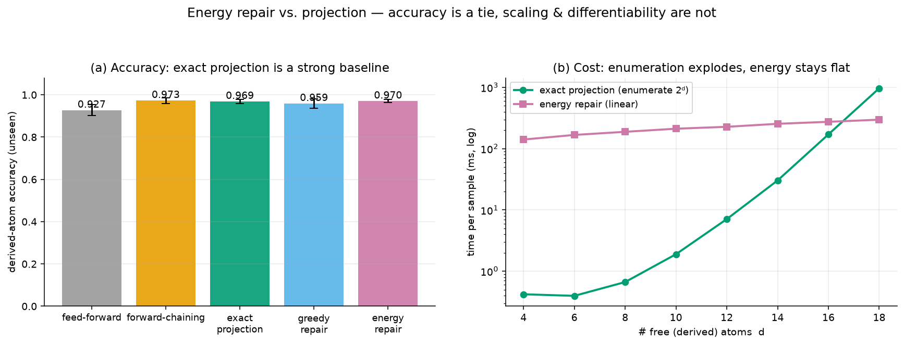
Training through repair (the capability projection lacks). Because repair is gradient descent, it can be unrolled into a differentiable module and placed inside a training loop. The gradient of a post-repair loss w.r.t. the network is 0.19 through differentiable repair and exactly 0.00 through a projection. Supervising a proposer with only a scalar readout of the repaired state — no per-atom labels — and training end-to-end through the repair, per-atom logical correctness emerges: derived-atom accuracy climbs from 0.47 to 0.993. A projection-in-the-loop gets zero gradient and cannot learn this. That is the honest answer to “why not just project?”: when the repair must live inside a learned system, differentiability is the whole point.
A negative result (for balance). We also tested whether training through the repair is a general inductive-bias win. With full per-atom labels and identical settings, pre-repair and post-repair supervision tie exactly on held-out worlds (e.g. 0.807 vs 0.805 at 6 training worlds; 0.948 vs 0.948 at 12) — no benefit, because the derived logic here is easily learned from data. Logic-in-the-loop helps only when the relationship is hard to learn; we do not claim a generalization win, only the distinct capability above.
…but it helps where theory predicts. Used as a semi-supervised loss on unlabelled data for a hard target (parity of four bits, which MLPs generalize poorly), the differentiable-logic energy lifts feed-forward parity accuracy by up to +26 points over labels-only (0.65 → 0.91 at 64 labels), with the gain largest when labels are scarce and vanishing once labels are plentiful. The precise boundary: the logic is inert when the target is easy and labels plentiful, and valuable when the target is hard and labels are few.
Is it just Semantic Loss? A logic loss on unlabelled data is what Xu et al.'s Semantic Loss (ICML 2018) already does, as −log of the exact weighted model count. We ran three arms on the identical parity task (labels-only, + our fuzzy energy, + exact Semantic Loss). They are not the same object: at matched weight the fuzzy energy is stronger (0.909 vs 0.831 vs 0.651 labels-only at 64 labels), and sweeping the loss weight shows why the gap is not an artifact — the fuzzy energy is weight-robust (0.90–0.92 for w∈[0.5,4]) while Semantic Loss peaks at a small weight and collapses to 0.57 as the weight grows. We claim no general superiority (one task), but the “merely a re-derivation” concern is retired and needing no weight tuning is a real convenience.
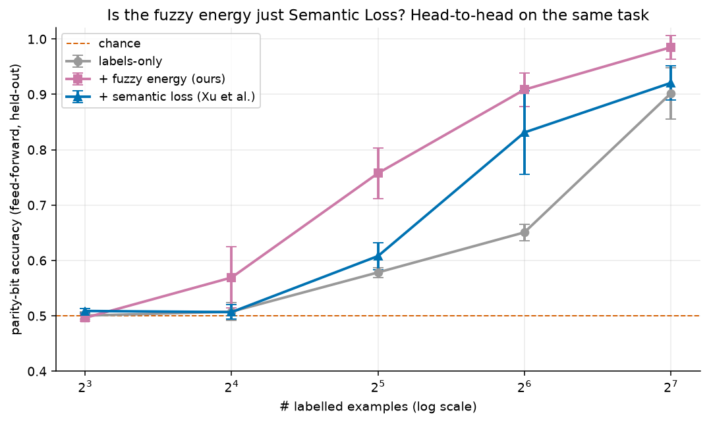
The mechanism ships as thermologic, a differentiable logic-energy layer that drops after any
model: score() gives a label-free inconsistency signal, violations() names the broken
rules, and repair(budget=…) returns the nearest valid output at a controllable compute budget.
A worked SaaS config-validation example flags an invalid plan (e.g. a Pro request for enterprise-only SSO), names
the rule, and repairs to the nearest valid configuration. v1 scope: structured/tabular outputs with propositional
rules; general LLM-text validation is roadmap, not a claim.
Harder benchmark + end-to-end integration. A realistic cloud security-configuration benchmark, written
as first-order templates (∀ resource r) and grounded over 3 resources, gives 20 atoms, 19 rules, and
432 distinct worlds — the pipeline reaches 100% consistency there. Wiring LogicEnergy onto a
plain network trained with no logic, it flags the 13.6% of unseen configs that violate policy (exact rule,
no labels; ~100% precision) and repairs to 100% consistency. Honest limits: it detects policy inconsistency,
not general correctness, and repair guarantees consistency (not correctness) against the model's recovered inputs.
An adversarial head-to-head — where our method loses. To rebut the “circular ground truth” objection we ran a deliberately hostile test on a canonical, externally-defined problem: recovering order-4 Latin squares (labels = the 576 real squares, enumerated independently; 64 atoms, 288 rules) from a noisy observation. It loses on both axes, and we report it plainly. At runtime an exact nearest-valid-grid solver dominates soft energy repair (100% vs 3.6% valid; 0.27 vs 0.03 grid-exact) — for small, clean, propositional constraints a solver is simply the right tool. At training time the logic loss gives no lift (a shade lower at every label budget), because Latin-square constraints are permutation-symmetric: they forbid conflicts but carry no signal about which value belongs in a cell. This sharpens the semi-supervised boundary above: the logic aids learning only when the constraint is informative about the target (parity), not merely satisfied by it.
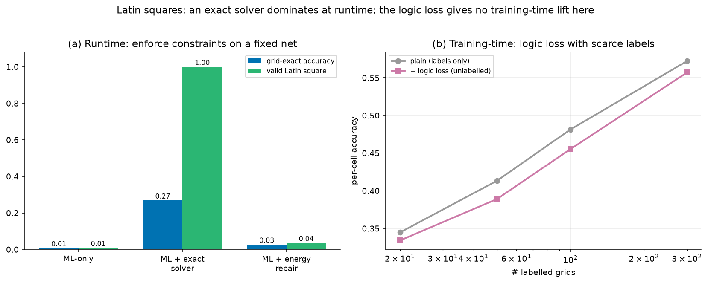
When enumeration is infeasible — measured scaling. The flip side of the Latin loss: when the number
of valid states is large, the enumerate-and-project baseline dies while energy repair keeps running. Sweeping Latin
squares of order 3/4/5 (12 → 576 → 161 280 valid grids) up to 9×9 Sudoku (~6.67×10²¹ valid grids), the
projection cost grows ~20 orders of magnitude while energy-repair wall-clock grows ~30× (1.2s → 34.8s). Honest
caveat kept prominent: this is not “solvers fail” — a real CP/SAT solver still cracks Sudoku
instantly; what dies is the enumerate-and-project baseline, and the differentiable energy is the generic,
gradient-compatible fallback that survives. A model-agnostic guardrail on LLM-style JSON
(examples/llm_json_guardrail.py) makes the product concrete: it repairs only safety settings,
holds user intent fixed, and escalates genuine intent conflicts (a public bucket that also stores PII) to a
human rather than silently rewriting the request.
Soft penalty → hard guarantee. The sharpest self-criticism was that soft energy makes contradictions
expensive, not impossible — repair could return a still-invalid state. A discrete backstop (min-conflicts
local search) closes it: repair(guarantee=True) returns a verified rule-valid state or raises,
and when the request is self-contradictory it returns a proof (the conflicting rules) instead of failing
silently. Run on five configs generated by Claude in-session, the guard flags four, verifiably repairs three, and
proves one — a public dashboard over raw customer PII — unsatisfiable.
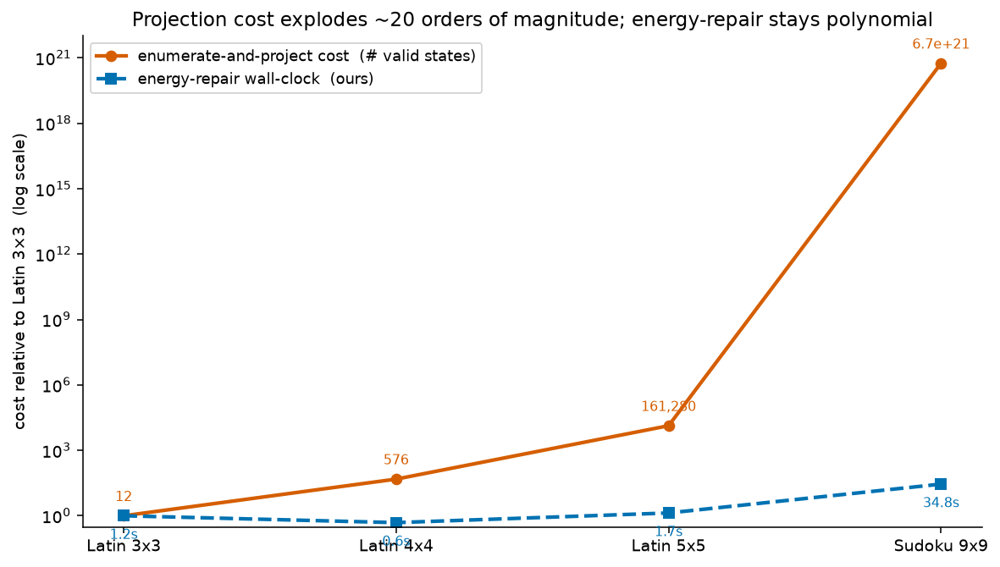
The honest value proposition is a label-free consistency guarantee and repair, not beating supervised learning on accuracy. The energy adds an iterative, budgetable inference step — a small instance of test-time compute for logical consistency. Limitations: 11 atoms, propositional Horn-style rules, synthetic data; no first-order variables, no defeasible rules, no real LLM. Soft energy makes contradictions expensive, not impossible (a crisp projection step would give a hard guarantee). The clean propagation wave needs momentum-free SGD, and mean-energy normalization couples wave speed to chain length.
A differentiable fuzzy-logic energy lets a neural network's beliefs be scored and repaired against hard rules by backpropagation alone. Empirically the value is reliability: comparable accuracy to a plain net but with a label-free consistency guarantee, an inference-time repair that scales with a compute budget, and a clean picture of reasoning depth as test-time compute — a small, honest, reproducible substrate for constraint-aware ML.
Badreddine, Garcez, Serafini, Spranger. Logic Tensor Networks. Artificial Intelligence, 2022.
Manhaeve, Dumančić, Kimmig, Demeester, De Raedt. DeepProbLog. NeurIPS, 2018.
Xu, Zhang, Friedman, Liang, Van den Broeck. A Semantic Loss Function for Deep Learning with Symbolic Knowledge. ICML, 2018.
Rocktäschel, Riedel. End-to-End Differentiable Proving. NeurIPS, 2017.
van Krieken, Acar, van Harmelen. Analyzing Differentiable Fuzzy Logic Operators. Artificial Intelligence, 2022.
LeCun, Chopra, Hadsell, Ranzato, Huang. A Tutorial on Energy-Based Learning. 2006.
Evans, Grefenstette. Learning Explanatory Rules from Noisy Data (∂ILP). JAIR, 2018.
Lu, West, Zellers, Le Bras, Bhagavatula, Choi. NeuroLogic Decoding. NAACL, 2021.
References are indicative of the intellectual context; this is a self-contained prototype, not a comparative benchmark against these systems. Code, figures, and this report regenerate from the open repository with fixed seeds.